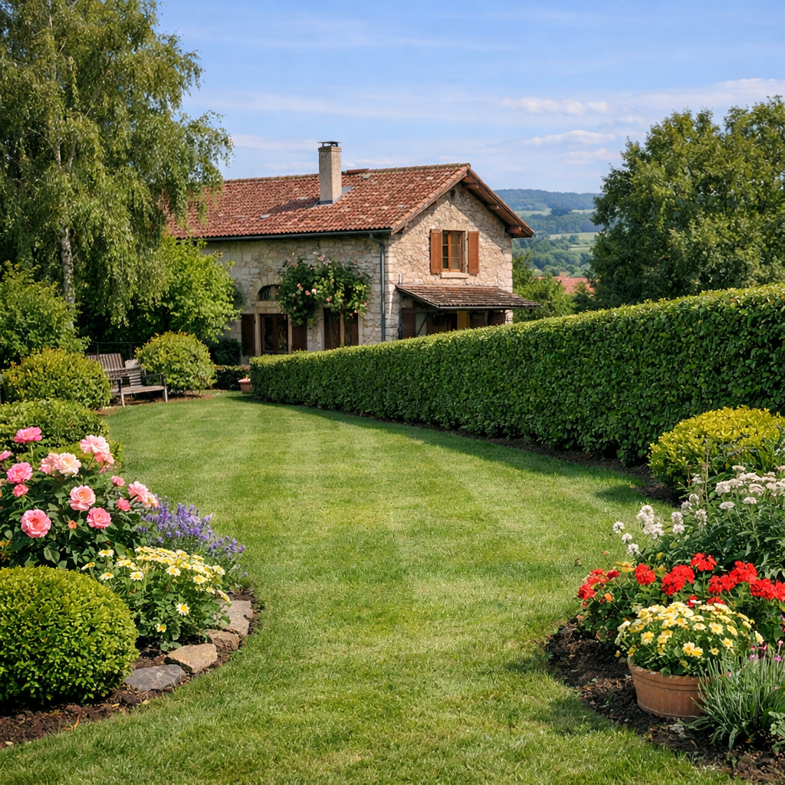
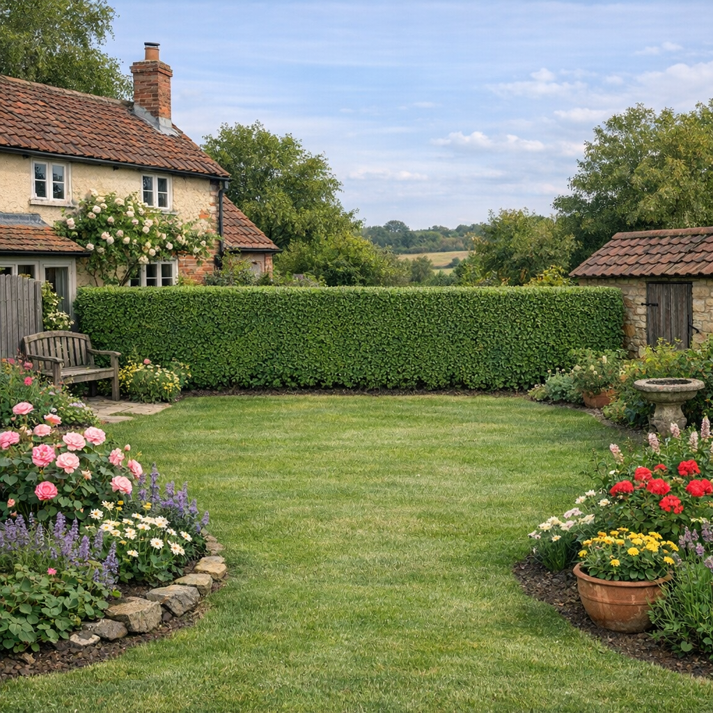
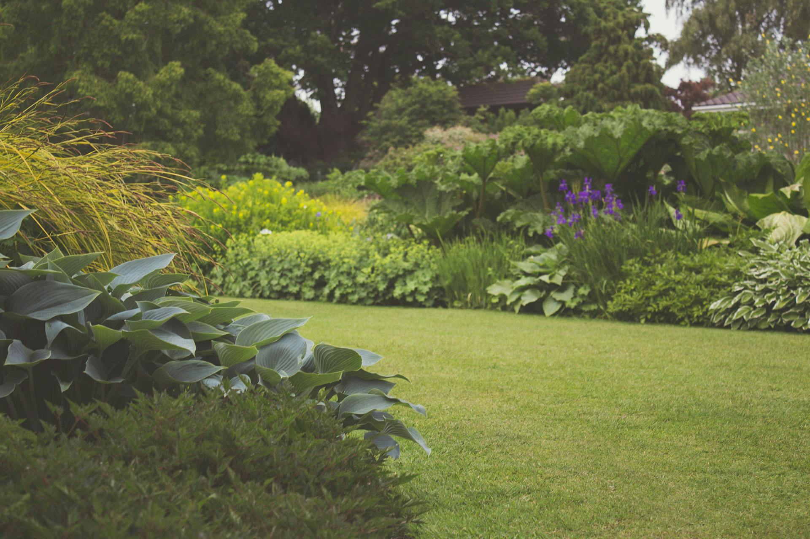
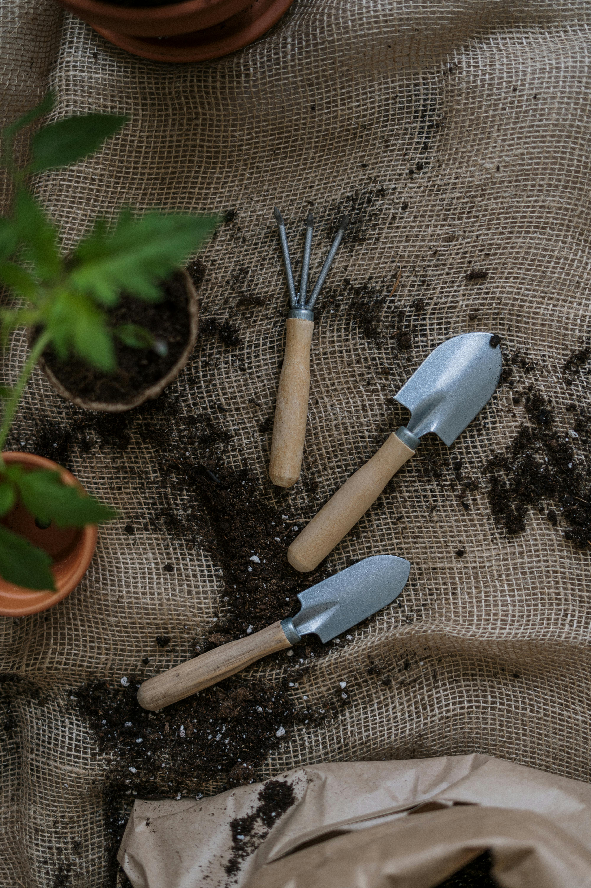

Nos services
De la conception à l'entretien, je m'occupe de tous vos besoins paysagers
Une gamme complète de prestations
Des solutions sur mesure pour tous vos projets d'espaces verts
Que vous souhaitiez créer un jardin de A à Z, rénover un espace existant ou assurer un entretien régulier, je vous accompagne à chaque étape. Je propose des services adaptés aux particuliers comme aux professionnels.

🌳 Création & Aménagement paysager
Je conçois et réalise des jardins sur mesure qui correspondent à vos goûts, votre style de vie et votre budget. De la conception des plans jusqu'à la livraison finale, je gère l'intégralité de votre projet.
Ce que je réalise :
- ✓ Création de jardins
- ✓ Allées et cheminements piétonniers
- ✓ Création de massifs floraux
✂️ Entretien d'espaces verts
Un jardin demande de l'attention tout au long de l'année pour rester beau et en bonne santé. Je propose des contrats d'entretien adaptés à vos besoins et à votre budget.
Mes prestations d'entretien :
- ✓ Tonte de pelouse et scarification
- ✓ Taille de haies et arbustes
- ✓ Désherbage et binage
- ✓ Ramassage de feuilles
- ✓ Fertilisation et traitement des végétaux
- ✓ Nettoyage de terrasses et allées
💡 Contrats annuels disponibles
Bénéficiez de tarifs préférentiels avec mes formules d'entretien à l'année.


🌱 Plantation et végétalisation
Le choix des végétaux est crucial pour la réussite d'un jardin. Je sélectionne des plantes adaptées à votre sol, votre exposition et vos envies, pour un résultat esthétique et durable.
Mon expertise :
- ✓ Plantation d'arbres et arbustes
- ✓ Création de massifs floraux
- ✓ Plantation de haies champêtres ou persistantes
- ✓ Végétalisation de talus
- ✓ Potagers décoratifs et carrés potagers
- ✓ Semis de gazon
🌿 Approche écologique
Je privilégie les espèces locales et résistantes, pour un jardin respectueux de la biodiversité.
Comment ça marche ?
Un processus simple et transparent
Contact & Devis
Vous me contactez, je fixe un rendez-vous pour étudier votre projet. Devis gratuit et sans engagement sous 72h.
Conception
Je conçois un plan détaillé avec sélection des végétaux et matériaux.
Réalisation
Une fois le projet validé, j'interviens selon le planning défini. Chantier propre et soigné.
Suivi
Je reste à votre disposition après les travaux pour conseils et entretien. Garantie sur mes prestations.
Un projet en tête ?
Demandez votre devis gratuit et personnalisé. Je vous réponds sous 48h.
Demander un devis